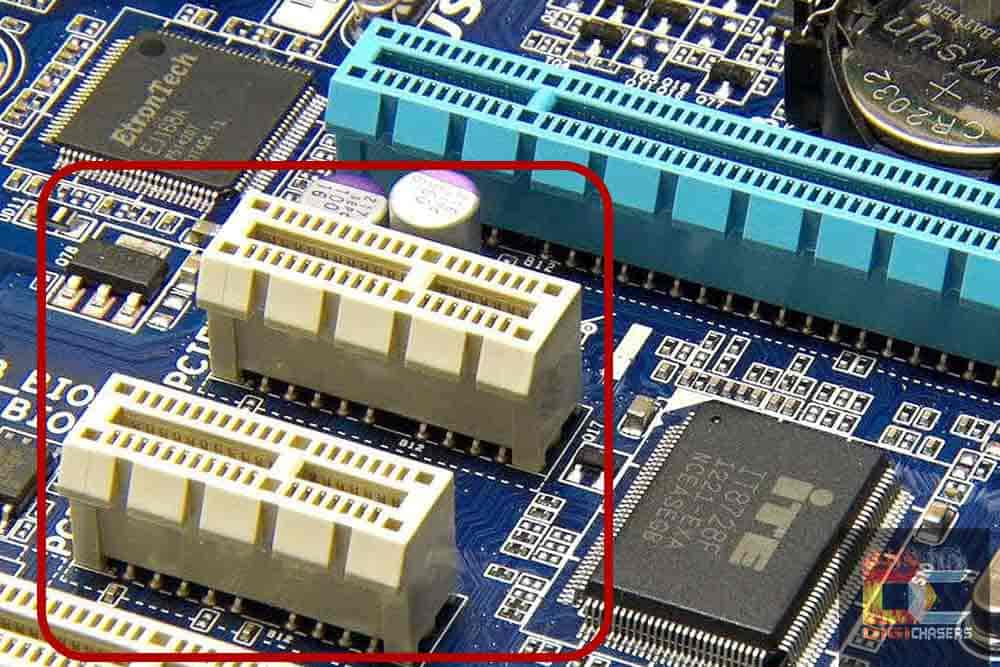

|  |
PCI Express X1 slots are the smallest slots from all available PCIe standard slots. These slots have less bandwidth as well as the fewest lanes. Normally, a PCI Express X1 slot is completely avoided if you don’t know the exact purpose as well as usage of it. Since the beginning, the PCI Express x1 slots have replaced the standard PCI ports. They are about 1 inch (or 26mm) long. The data transfer speed to/from the motherboard is up to 250 MBps in each direction at once. |
The Uses for PCIe x1 |
|
Sound Card |
Most of the time, you don’t like a built-in sound card due to poor audio quality or other issues. Despite the fact that most of the latest motherboards are equipped with high-quality sound cards. Still, at times, one does not like the audio quality or want some other enhanced audio features that are not available on built-in sound cards. That is where the PCIe X1 slot comes to the rescue. |
Port Expansion Cards |
At times, a user is limited by the ports provided on the motherboard. The reason is that sometimes a motherboard does not have enough slots or ports to add additional peripherals, or cards. An expansion card, such as a SATA expansion card, provides a user with the facility of adding more storage drives, or other devices. |
Modems / Network Cards |
Another, one of the most important usage of the PCI Express X1 slot is network expansion, which provides compatibility for modem and network cards. In the latest released motherboards, we see that there is competition for smaller, and more compact sizes, and dimensions. For this purpose, the larger parts are being removed to save some extra space for compactness. Due to this, we see that the most important ports, like the RJ-45 Ethernet port, are not available on some of the latest motherboards. |
NVMe (M.2) Drive Slots |
We all know that this tech era is all about speed and performance. The times of traditional hard drives are about to end now. SSDs (Solid State Drives) are much faster as well as durable in comparison to the classic hard drives. Classic hard drives use a disk that is prone to go bad if not handled with a delicate care. Moreover, hard drives provide slower speeds and are not rigid. In contrast, Solid State Drives are great in terms of speed, performance as well as durability. |
TV Tuner Card |
What if you don’t own a TV, but still want to watch a live TV on your computer? Yes, you can do that using the internet, and watch almost all the channels online. However, if you don’t want to stream online due to limited or no internet connectivity, there is still a better way. A TV Tuner card is a card, or device that receives satellite signals directly on your computer. This enables you to watch all the channels easily, and without any hassle. For this, you may simply insert a TV Tuner card, or respectively, expansion card, directly into a PCI Express X1 slot, and thus enjoy the premium entertainment easily. |
Video Capture Cards |
What if you can capture anything on screen from a digital camera, a DVD player, or an old VCR having VHS tapes? Video Capture Cards – VCC are used to record video from external devices – like a game console or a camera. |